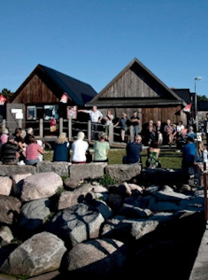

Djupviks hamn ligger på Gotlands västkust nästan rakt öster om Lilla
Karlsö. Hamnen är otroligt vackert belägen i anslutning till ett
gammalt Gotländskt fiskeläge bestående av fiskebodar från sent
1800-tal. Husen är grupperade i tre rader, mellan dem ligger
gistgarden där man torkar nät och närmast stranden ligger båthusen.
Från fiskeläget har man fri utsikt mot de båda Karlsöarna. Ansvaret
för hamnen och fiskeläget har Djupviks hamnförening, som är en
ideell förening som aktivt verkar för att bibehålla och utveckla
Djupvik som fiskehamn och som fritidsbåtshamn för de många närboende
och sommarboende. Föreningen driver en glasskiosk och kaffeservering
på sommartid i ett gammalt båthus vid hamnen. Ett par hundra meter
ovanför hamnen ligger Djupviks Hotell, ett hotell med restaurang och
bra standard. Det finns även toaletter i hamnen varav en som är
tillgänglighetsanpassad för rullstolar och rollatorer.
Senaste nytt
Hamnjobb

Foto: Björn Hjernquist
Lördagen den 6 april samlades ett antal av föreningens medlemmar för
arbete i hamnen. Kiosken, kajerna och stranden städades. Kajer
lagades och gräs brändes. Diverse fix på många håll. Vädret var bra
och korven god. Det som återstår inför säsongen är att ta bort släke
från stranden, att sätta upp ramp vid kiosken och att fylla kiosken
med varor.
Succé för hamnens dag!
Lördagen den 16 juli arrangerade föreningen Djupviks hamn i Eksta
”Hamnens dag” i Djupvik. Vårt arbete har med åren alltmer också
inriktats på att alla besökare, även de som kommer landvägen skall
trivas i det vackra hamnområdet. Nu bjöds det in till ”Hamnens dag”.
På plats fanns sjöfartsverkets SAR-helikopter, Sjöräddningens båt
Hwitstjärna, släckningsbil från räddningstjänsten i Klintehamn, russ
från Gannarve och ett antal loppisförsäljare. Aktiviteten lockade
ett stort antal besökare. Uppskattningsvis 1000 besökare sökte sig
under dagen till Djupvik. Intresset var stort för de besökande
organisationerna som informerade och alla fick möjlighet att titta
och ställa frågor. Barnen fick rida, de bjöds på bulle och dricka
och många prövade lyckan i fiskdammen. Det fanns möjlighet att
handla kaffe, korv, dricka och glass. Många dröjde sig kvar i
hamnområdet och trivdes i det inledningsvis lite blåsiga men vackra
vädret.